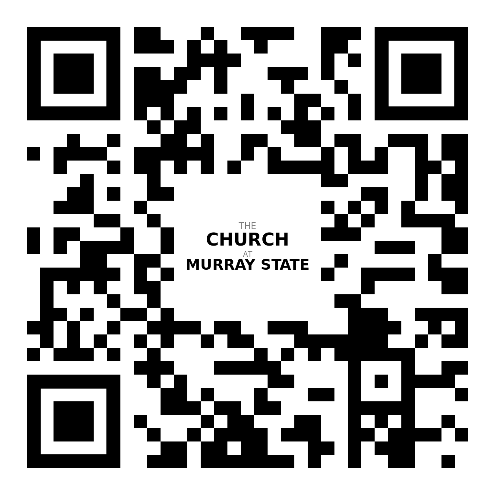

The Church at Murray State
Sunday Worship and Service: 11:00 AM
1508 Chestnut St. • Murray, KY 42071
Why Visit Us?
We exist to glorify God by making disciples of Jesus Christ through gospel-centered worship, biblical teaching, and authentic community. Whether you're a Murray State student or part of the local community, you're welcome here!

New to Church? Come with Questions, Leave with Community
Pastor Jamie Revell
pastor@thechurchatmurraystate.com